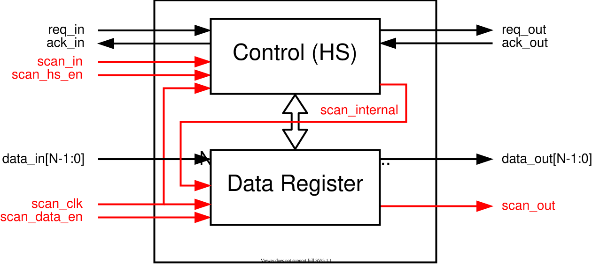

13.1. Scan Chain Overview
A scan chain system is implemented in Speck2e in order to enable rapid testing and debugging of the internal circuitry.
The scan chain is implemented in all Asynchronous Logic blocks inside the chip.
13.1.1. Introduction
In synchronous logic desing these two modes are equivalent, since circuit operation depends on an external clock. For asynchronous circuits, however, we have to treat them very differently.
13.1.2. Scan Chain Interface Pins
To support both modes, the scan chain in Speck2e is generally controlled by the following internal signals:
Signal |
Description |
Controlled by |
SCAN_HS_EN |
Handshake SC enable |
Enable/Disable via specialized JTAG command SCAN_HSEN_ON/SCAN_HSEN_OFF. |
SCAN_DATA_EN |
Data SC enable |
Enable/Disable via specialized JTAG command SCAN_DEN_ON/SCAN_DEN_OFF. |
SCAN_CLK |
SC Clock (when SC is enabled) |
Connected to pin IO3_TCK by JTAG command SCAN_SHIFT. |
SCAN_IN |
SC bit stream input (when SC is enabled) |
Connected to pin IO4_TDI by JTAG command SCAN_SHIFT. |
SCAN_OUT |
SC bit stream output |
Connected to pin IO6_TDO by JTAG command SCAN_SHIFT. |
13.1.3. Scan Chain Asynchronous Logic Blocks
Each Asynchronous Logic Block (ALB) inside Speck2e is part of one of the internal branches of the scan chain. For the connectivity details and branch enabling, see Scan Chain Connectivity.
The following diagram shows a conceptual view of a simple BUFFER ALB with an in/out bus of N bits.


N-bit BUFFER ALB with scan chain signals
Inside each ALB, there are two main elements connected in series to the scan chain:
13.1.3.1. Control (handshaking) block
This block handles the handshaking mechanism for the asynchronous communication between connected blocks.
The Control block typically contains 4 (MERGE ALBs) or 3 (all other ALBs) bits of the scan chain test vector.
The three bits of the Control block scan chain are used as follows:
Bit |
Use |
0 (first to enter) |
block bit (only to control the MODE 2) |
1 |
in_ack bit (indicating that data has been received and stored) |
2 (last to enter) |
en bit (switching the data buffers from transparent (on) to storing (off)) |
Note
In the case of MERGE ALBs, there are two in_ack bits, one for each input bus. The first of the two bits entering the scan chain is related to output 2 in_ack.
13.1.3.2. Data Register
The Data Register block receives the scan_in signal in series to the Control block.
For a BUFFER ALB, there are 2 scan chain bits for each bit of the input bus width. The two bits, in turn control the f and t signals of each input bus register element.
Specifically, the first bit to enter the Data Register block will control the data_out_t[0] signal, the second bit will control data_out_f[0], the 3rd data_out_t[1] and so on.
Note
SPLIT ALBs contain two Data Register blocks, one for each output bus. Therefore, the number of scan chain bits dedicated to the Data Registers for a \(N\)-bit SPLIT block is \(4*N\).